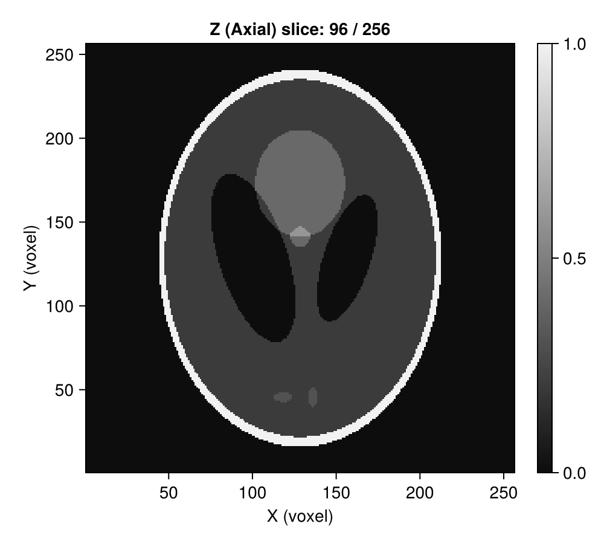
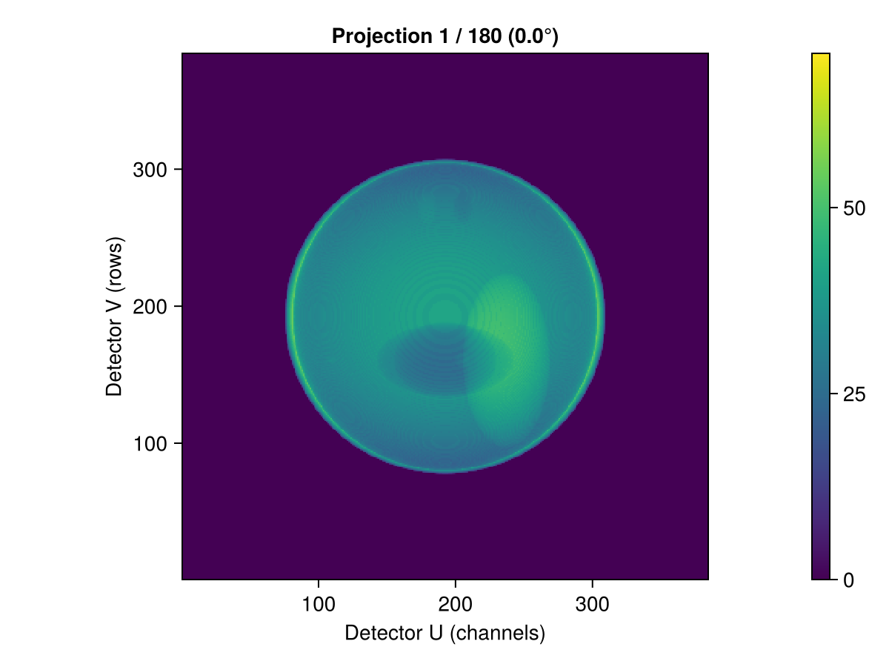
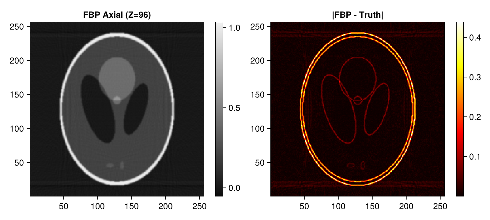
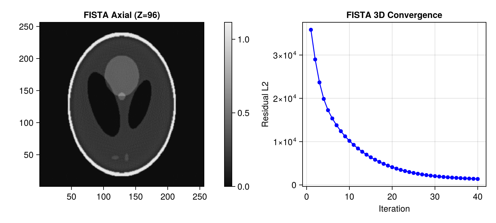
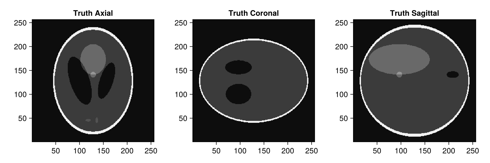
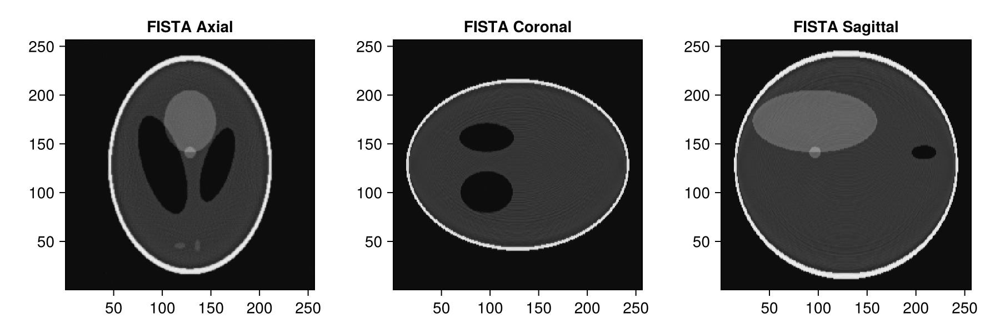

3D Parallel-Beam CT Demo with Tigre.jl
This tutorial demonstrates a complete 3D volumetric parallel-beam CT workflow (representative of synchrotron micro-CT beamlines):
- Generating a 3D Shepp-Logan volume using Tigre.jl's built-in
shepp_logan_3d. - Configuring a 3D parallel-beam Geometry in Tigre.jl.
- Simulating 3D forward projection onto a 2D planar detector using
Ax. - Performing volumetric reconstruction using 3D Parallel Filtered Backprojection (
fbp). - Performing 3D iterative reconstruction using
fistawith 3D Total Variation (TV) regularization. - Multi-planar visualization across axial, coronal, and sagittal orthogonal planes.
Relevant Functions Used
Tigre.shepp_logan_3d: Generates analytical 3D Shepp-Logan volumetric phantom.Tigre.Geometry: Sets up 3D parallel-beam acquisition geometry.Tigre.Ax: Computes 3D forward projection through voxel volume onto 2D detector array.Tigre.fbp: 3D parallel-beam filtered backprojection.Tigre.fista: Accelerated 3D proximal gradient reconstruction with 3D TV regularizer.
Prerequisites
This tutorial uses Makie (recommended backend: CairoMakie) for visualization. If CairoMakie is not installed in your environment, add it by running using Pkg; Pkg.add("CairoMakie").
using LinearAlgebra
using CairoMakie
using Tigre1. 3D Volumetric Phantom Generation (Built-in shepp_logan_3d)
We synthesize a $256 \times 256 \times 256$ volumetric Shepp-Logan phantom.
N = 256
vol_phantom = shepp_logan_3d(N; phantom_type = :yu_ye_wang)
println("3D Phantom dimensions: ", size(vol_phantom))
println("Value range: [", minimum(vol_phantom), ", ", maximum(vol_phantom), "]")
# Visualize axial slice (Z = 3N/8) using plotImg
mid_z = 3 * N ÷ 8
plotImg(vol_phantom; dim = :z, slice = mid_z, figure_size = (500, 450))
3D Phantom dimensions: (256, 256, 256)
Value range: [-1.4901161e-8, 1.0]
2. 3D Parallel-Beam Geometry Setup
In 3D parallel-beam CT:
- Each detector row corresponds to an independent parallel slice projection.
angles: 180 projection angles spanning $[0, \pi]$ radians (180 degrees).nDetector = (nDetU, nDetV): 2D detector pixel grid.DSO = DSD = 1000f0: Distance values are identical for parallel-beam geometry.
n_angles = 180
angles = Float32.(range(0, pi, length=n_angles))
n_det = 384
geo = Geometry(
mode = :parallel,
angles = angles,
nVoxel = (N, N, N),
sVoxel = (Float32(N), Float32(N), Float32(N)),
nDetector = (n_det, n_det),
sDetector = (Float32(n_det), Float32(n_det)),
DSO = 1000.0f0,
DSD = 1000.0f0,
)
println("3D Parallel Geometry:")
println(" Volume size: ", volume_size(geo))
println(" Projection size: ", projection_size(geo))
3D Parallel Geometry:
Volume size: (256, 256, 256)
Projection size: (384, 384, 180)3. 3D Forward Projection (Ax)
Ax simulates projection through the 3D volume, producing an array of size (nDetU, nDetV, nAngles).
projections = Ax(vol_phantom, geo)
println("Projections size (U x V x Angles): ", size(projections))
# Display projection radiograph at gantry angle 0° using plotProj
plotProj(projections, angles; slice = 1, figure_size = (600, 450))
Projections size (U x V x Angles): (384, 384, 180)
4. Direct 3D Reconstruction with FBP (fbp)
fbp filters each detector slice with a ramp filter and backprojects across all projection angles.
rec_fbp = fbp(projections, geo; filter = :hann)
fig = Figure(size = (800, 360))
ax1 = Axis(fig[1, 1], title = "FBP Axial (Z=$mid_z)", aspect = DataAspect())
hm1 = heatmap!(ax1, rec_fbp[:, :, mid_z], colormap = :grays)
Colorbar(fig[1, 2], hm1)
ax2 = Axis(fig[1, 3], title = "|FBP - Truth|", aspect = DataAspect())
hm2 = heatmap!(ax2, abs.(rec_fbp[:, :, mid_z] .- vol_phantom[:, :, mid_z]), colormap = :hot)
Colorbar(fig[1, 4], hm2)
fig
5. Iterative 3D Reconstruction with FISTA (fista)
FISTA applies 3D Total Variation denoising (tviter = 5, tvlambda = 0.05f0) across all three spatial dimensions.
# =============================================================================
# Estimation of FISTA Lipschitz Hyperparameter (`hyper`)
#
# FISTA (Fast Iterative Shrinkage-Thresholding Algorithm) relies on proximal gradient descent.
# Its gradient step size is proportional to 1 / hyper, where hyper represents the Lipschitz
# constant L ≈ ||Aᵀ A||₂ (the spectral radius of the forward-backward projection operator).
#
# If `hyper` is left to the default fallback value, the gradient step size can be drastically
# mismatched (e.g. orders of magnitude too conservative), leading to poor reconstruction quality
# and near-zero convergence.
#
# We explicitly estimate `fista_hyper` beforehand using the SVD power method via `estimate_hyper(geo)`.
# Storing it in an explicit variable before calling `fista` makes the parameter calibration step
# transparent and easily verifiable, emphasizing the critical importance of proper operator norm scaling.
# =============================================================================
fista_hyper = estimate_hyper(geo)
println("Estimated FISTA Lipschitz hyperparameter: ", fista_hyper)
Estimated FISTA Lipschitz hyperparameter: 93445.61niter = 40
rec_fista, hist = fista(
projections,
geo,
niter;
hyper = fista_hyper,
tviter = 5,
tvlambda = 0.05f0,
nonneg = true,
return_history = true,
compute_l2 = true,
)
fig = Figure(size = (800, 360))
ax1 = Axis(fig[1, 1], title = "FISTA Axial (Z=$mid_z)", aspect = DataAspect())
hm1 = heatmap!(ax1, rec_fista[:, :, mid_z], colormap = :grays)
Colorbar(fig[1, 2], hm1)
ax2 = Axis(fig[1, 3], title = "FISTA 3D Convergence", xlabel = "Iteration", ylabel = "Residual L2")
scatterlines!(ax2, 1:length(hist.residual_l2), hist.residual_l2, color = :blue)
fig
6. Multi-Planar Orthogonal Views
We inspect the 3D volume along the three canonical orthogonal cross-sections:
- Axial ($XY$ plane)
- Coronal ($XZ$ plane)
- Sagittal ($YZ$ plane)
mid_x = N ÷ 2
mid_y = N ÷ 2
# Ground truth views
fig = Figure(size = (900, 300))
ax1 = Axis(fig[1, 1], title = "Truth Axial", aspect = DataAspect())
heatmap!(ax1, vol_phantom[:, :, mid_z], colormap = :grays)
ax2 = Axis(fig[1, 2], title = "Truth Coronal", aspect = DataAspect())
heatmap!(ax2, vol_phantom[:, mid_y, :]', colormap = :grays)
ax3 = Axis(fig[1, 3], title = "Truth Sagittal", aspect = DataAspect())
heatmap!(ax3, vol_phantom[mid_x, :, :]', colormap = :grays)
fig
# FISTA reconstructed views
fig = Figure(size = (900, 300))
ax1 = Axis(fig[1, 1], title = "FISTA Axial", aspect = DataAspect())
heatmap!(ax1, rec_fista[:, :, mid_z], colormap = :grays)
ax2 = Axis(fig[1, 2], title = "FISTA Coronal", aspect = DataAspect())
heatmap!(ax2, rec_fista[:, mid_y, :]', colormap = :grays)
ax3 = Axis(fig[1, 3], title = "FISTA Sagittal", aspect = DataAspect())
heatmap!(ax3, rec_fista[mid_x, :, :]', colormap = :grays)
fig
Summary
- In 3D parallel-beam geometry,
Tigre.jlprovides fast volumetric projection and backprojection. - FISTA with 3D TV regularization enforces spatial consistency across adjacent slices, effectively suppressing noise and ringing.